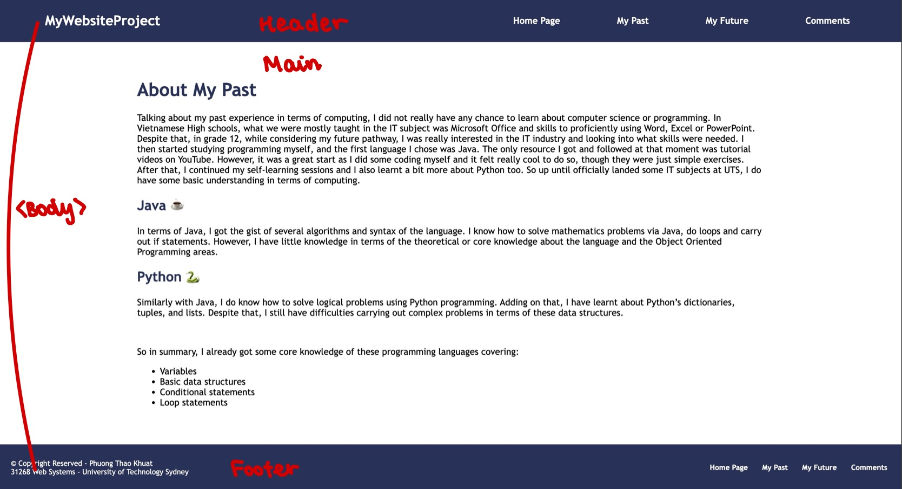
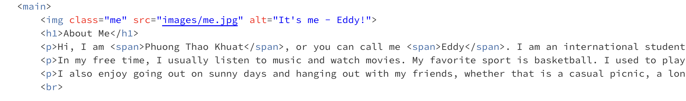
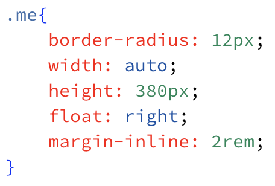

Comments Page
Overall website structures
Overall, my website has 4 webpages and 1 cascading stylesheet, just like the fixed requirements from the Web Assignment instructions. The pages are linked via hyperlinks using an a tag in HTML. In the table below, I will present the general descriptions and information of my website structure:
| Filename | Title | File Type | Description |
|---|---|---|---|
| index.html | Home Page | HTML | The Home Page of the website. Containing details about myself, my interests, my high school experience and skills. |
| past.html | My Past | HTML | This Past Page includes information about my experience in terms of Computing in the past. |
| future.html | My Future | HTML | This Future Page describes my plans and aims for my future. What skills or career I am pursuing, what short-term and long-term plans I am having. |
| comments.html | Comments Page | HTML | This Comments Page provides an overview and descriptions on my Website Assignment. The discussions will involve the overall structure of the website, technical structure of web page, graphic design and further discussions. |
| websystems.css | N/A | CSS | The stylesheet that manages the aesthetics and the visuals of the website. |
Technical structure of web page
In each web page, there are 3 main sections in the body of the HTML file: the header, the main, and the footer sections. Each section is included in a div element in HTML, which assists in positioning parts on the web page. This helps the page to become clearly structured and easy to design while styling in the CSS file.
header
The header div contains 2 basic parts just like the graph shows: The website icon on the left and the navigation bar on the right. The icon is set with a simple tag, using xx-larger font-weight so as to indicate visual guidance at the left-top of the page.
Then to the navigation bar, the bar includes 4 buttons to the “Home Page”, “My Past”, “My Future” and the “Comments” pages. These are technically created through an unordered list element. Then in the styling, I excluded the bullets from the list and structured it with hidden overflow feature then float to the right of the top webpage.
main
Moving on, the main div contains the main content of a page. It begins with a "h1" tag to emphasize on the title for that page, followed by organized paragraphs, lists, tables and other visual elements such as images.
For the paragraphs or images, I used class or div so that I could overwrite the already set styling of the section easier and create the own style for that picture in terms of size, margins, alignment or border-radius. For example, for the me.jpg image, it is configured with the class “me” in HTML:
And then later formatted in CSS file:
With these HTML tags and elements, the styling process becomes less overwhelming on the CSS file. This helps the altering or fixing process effortlessly as the parts are managed through general tags, just need to overwrite if required specific design for any element.
footer
The footer div at the end consists of the Copyright details and information about the course my website belongs to. Moreover, I also added a supplement navigation bar to enhance the flexibility and convenience of users: Instead of having to scroll all the way up to the top bar, there are tools down at the bottom that just work similarly. And in the CSS file, the supplementary navigation bar was margined to the left while the other block of details was in the right. These create symmetry that enhances the aesthetics aspect for the website.
Styles and CSS configurations
And when it comes to the styles and CSS selectors, scanning through my work, I mostly used element tags such as body, p, h1 and class, div or id selectors to configure my CSS formatting. To get into details in a simpler way, below is a table that lists all configurations in the CSS file of my website:
| Name | Selector Type | Functions |
|---|---|---|
| body | Element | Set the overall margin, text color, background color and overall font selection for the page. |
| main | Element | Overwrite from the body element, add margin information. |
| h1, h2, h3, h4 | Element | Set the font-weight, font-size, alignment and color for the headings at each level. |
| p | Element | Overwrite from the body element and just add feature in terms of the display of the p element to be shown as block. |
| span | Element | Set the color and font-weight for the parts that are “spanned”. This is similar to a tool to highlight or make the part stand out from the overall text. |
| footer | Element | Set the styles for footer areas: Margin, padding, background color, text color, font-size, display, alignment, element gap and text wrapping. |
| #nav-bar | ID | Set the style for the navigation bar areas. |
| #nav-bar a:hover | ID | Set hover effects for a tags in the navigation bar ID areas. |
| #ft-info | ID | Set the style for the information section at the bottom footer areas – alignment and div display. |
| .top-bar | Class | Set the overall design for the header, includes display, alignment, background color and padding information. |
| .page-icon | Class | Set the alignment and positioning for the top page icon. |
| .nav-list | Class | Design the list element that forms the navigation bar. |
| .nav-list a | Class | Design the a tags or the buttons on the navigation bar. |
| .outer-page | Class | Structure the outer page background color. |
| .page | Class | Structure the inside page size, padding, margin and background color. This helps to create a front box that includes the main content and keeps it neatly focused on the center. |
| .me | Class | Set stylings for the image of myself. |
| .dc | Class | Set stylings for the two images below, make it float to the left of paragraphs followed. |
| .edit-line | Class | Set margins for the p followed the .dc class pictures. |
| .table1, .table1 tr, .table1 th, .table1 td | Class | Set the overall size, padding, text alignment, margin and format the border of the table. |
| .table-title | Class | Set the background color for the table header row. |
| .table2, .table2 tr, .table2 th, .table2 td | Class | Set the overall size, padding, text alignment, margin and format the border of the table. |
| .uts-img | Class | Format the image of UTS buildings to fit the paragraphs and overall vision. |
| .end-nav | Class | Set the style for the ending navigation bar areas. |
| .end-list | Class | Design the list element that forms the supplement navigation bar. |
| .end-list a | Class | Design the a tags or the buttons on the supplement navigation bar. |
| .end-list a:hover | Class | Set hover effects for a tags in the ending navigation bar class areas. |
Graphic design - aesthetics
Overall, considering the design buildings of this website, I chose a modern, minimalist form to deliver the information in a simple and fast-paced approach. The website is designed basically to align with careful consideration in terms of both UI and UX. To be specific, I will break down the aesthetics of this site into several important aspects:
Colors
Pursuing simplicity style, the color palette for this web project only includes 4 main colors with consistency in the design to create uniformity. The colors are selected and placed with high contrast to ensure visibility for viewers. Besides, rather than highlighted colors, I prefer those with more neutral shades. And the color navy – the key swatch – aims to symbolize trustworthiness, authority and professionalism.
Font
The font was selected with great care in order to blow the modern style of the page further. I used sans-serif font, specifically Trebuchet MS font to fit the overall design concept. Additionally, font-size and font-weight were altered in a way to create a hierarchical structure of headings, making the page organized and professional.
Spacing
Spaces were included to prevent overwhelming elements in one area. I also intended to make use of spacing for the separation of content, keeping it clear for readers to follow.
Visuals
Different types of visuals were involved, namely images and icons. I believe the usage of visual items helps the pages to be more attractive and meaningful. If just contained blocks of texts page to page, it would rather be boring and bland. Also, pictures were bordered and altered so that the size fit perfectly with the paragraphs wrapped around. This also enhances the organization of the look.
Effects and interactivity
The hover effect was applied here at the navigation bars. This allowed users to easily keep track of which button, which areas they are swiping through. And I believe this feature makes some advancement for the feel and overall interactivity of the web.
Futher comments
In terms of further discussion, regarding the “alt” tag, in my project, this tag fulfills the purpose of accessibility support and context support. For accessibility, if someone cannot see the image or in slow networks conditions, the browser shows the alt text, and this would help the users to be able to understand what is on the screen. Adding to that, the tag gives semantic context which is useful for image search too.
Finally, looking at the site when styling sheet is turned off, the website still works just fine as normal. But one disclaimer is that without CSS file, the images would appear to be bigger and rather out of size compared to the overall page. Nevertheless, the links and other items still perform well, and rather than utilizing lower resolution images that affects the quality and the professionalism of the site, I will still maintain the original size of the used pictures as practically they do not create any source of big issue without CSS.